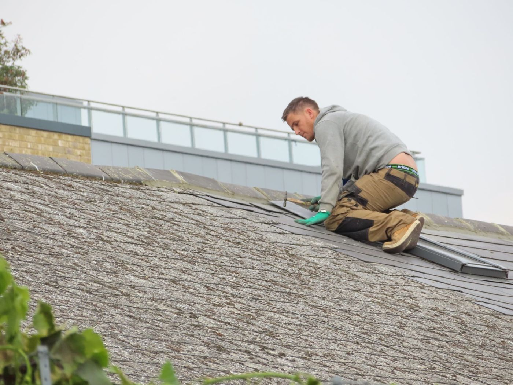

Roof Repairs Cape Town
Storm damage, a lifted flashing, a cracked tile. Fix the cause before the ceiling pays for it.
What a roof repair is for
Roof repairs in Cape Town cover the damage that waterproofing cannot: tiles lifted by north-westerly wind, flashings torn at a gable, a valley blocked with debris, a sheet that pulled its fasteners. These are fixing jobs, not coating jobs.
We separate repair from replacement. A ridge with three cracked tiles is a repair. A roof at the end of its life with rusted fasteners is not, and recoating only postpones the conversation by a winter.

Roof repairs Cape Town: what we fix
The parts of a roof that take the wind first.
Leaking roof repairs
The leak traced to a flashing, valley or penetration before anything is replaced.
Get estimate →Storm and wind damage
Lifted sheets, broken tiles and torn waterproofing secured and replaced.
Get estimate →Flashings and valleys
Metal replaced at gables, chimneys and wall junctions where sealant has failed.
Get estimate →Fasteners and sheets
Rusted screws and pulled sheets re-fixed, with the cause of the movement checked.
Get estimate →What a roof repair costs
| Factor | Why it moves the number |
|---|---|
| Access | A double-storey roof needing scaffolding costs more before any work starts. |
| Extent | One flashing is an hour. A storm-damaged section is a day and materials. |
| Roof type | Tile, slate, IBR and concrete slab each need different fixing methods. |
We quote repairs in writing after inspecting, and we say when a repair is not worth doing.
Get a written roof repairs estimate
Send photos of the damage and we will tell you what the repair involves.
How we work
1. Inspect
Roof, flashings and the ceiling below, from the inside where possible.
2. Trace the leak
Hose test or moisture reading so the repair is at the entry point.
3. Quote in writing
Scope, materials and access, priced separately from any waterproofing.
4. Repair and test
Work completed, then a water test on the repaired area.
- Repair before replace: We will tell you when a repair is the wrong money.
- We check the inside: The stain on the ceiling rarely sits under the hole.
- Storm work done properly: Secured against the next front, not just this week.
The Plinth Standard
- Written scope + fixed price before we start
- Photo updates if you're not on site
- 12-month workmanship warranty on renovations
- Goodwood-based, fast response across Cape Town
Roof Repairs across Cape Town
We are based in Goodwood and cover Cape Town within about 25km.